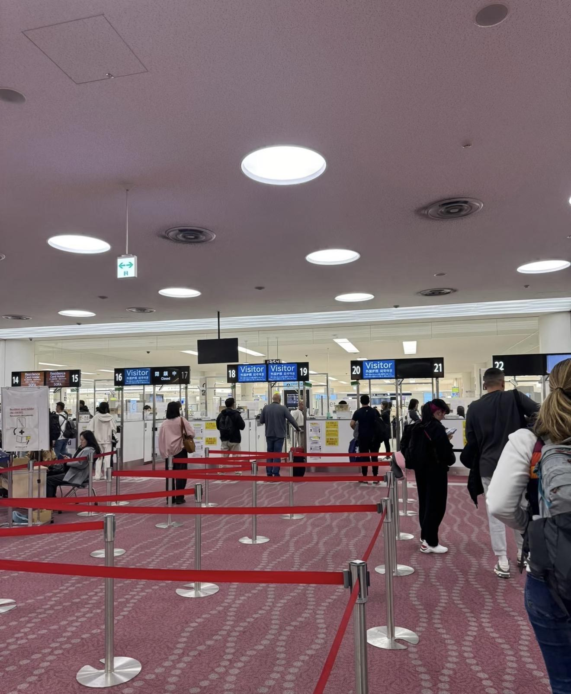
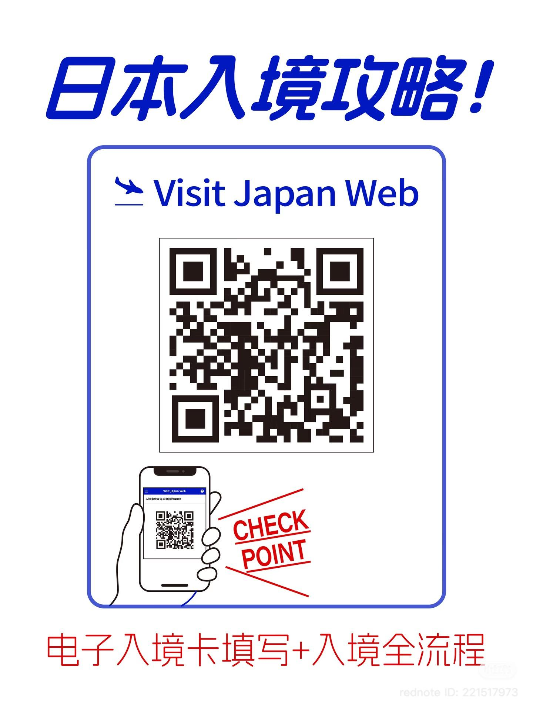
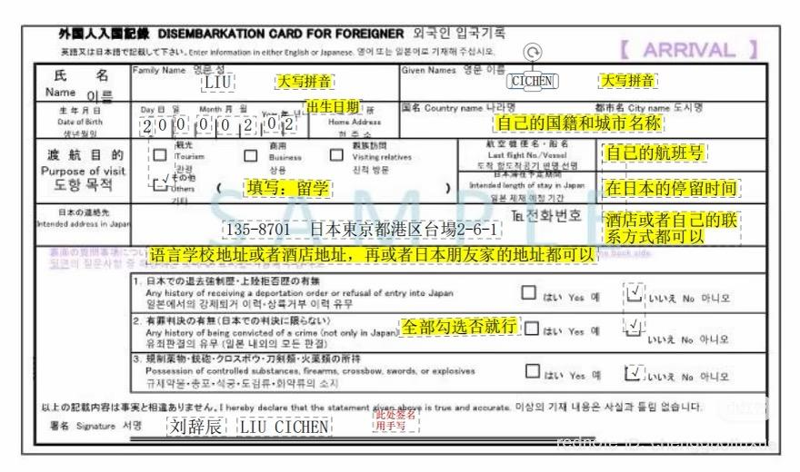
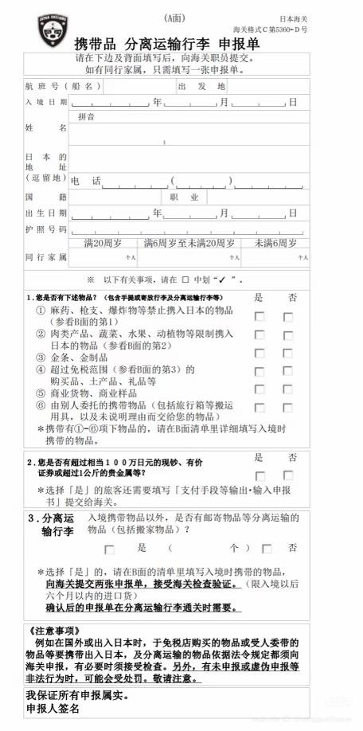
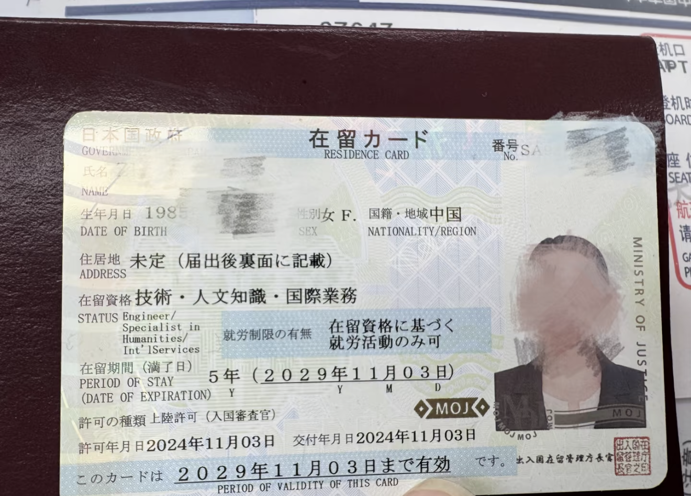
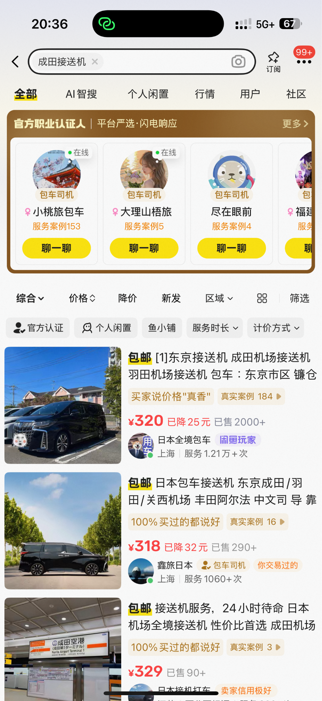
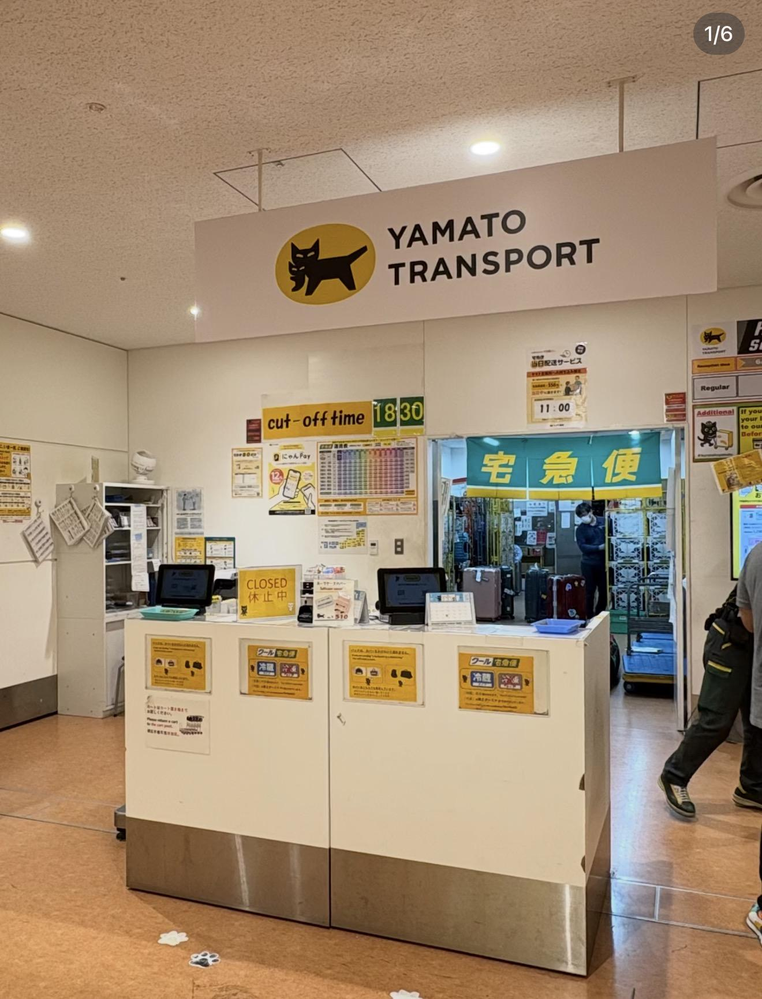
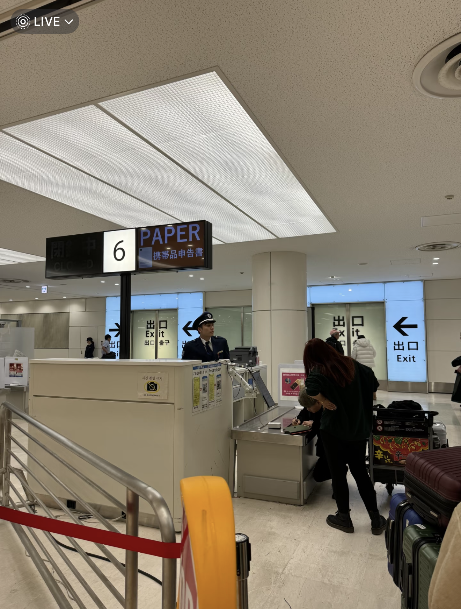
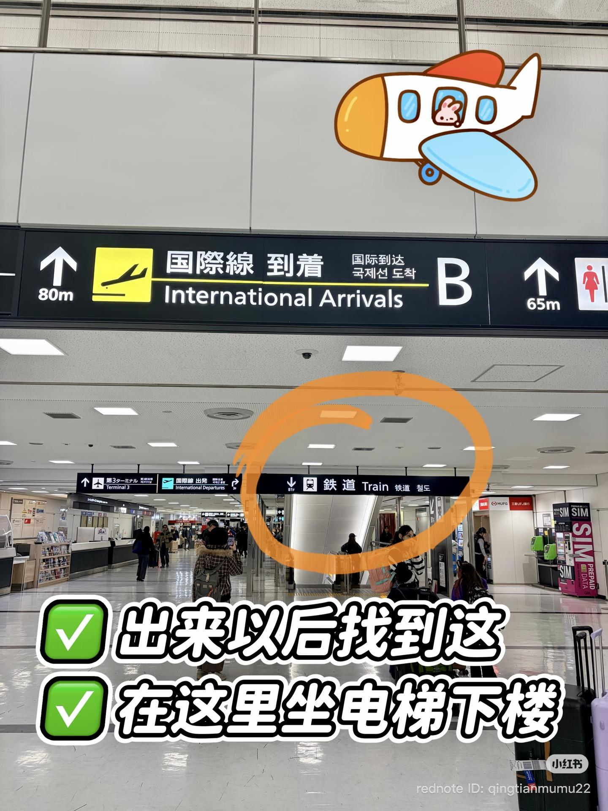

1. 如何过境？
需要准备的材料
- 护照
- 在留资格原件
- 入学许可书原件或复印件
- 资格外活动许可书
入境流程
下飞机后，跟着「到着」指示牌走，走得越快，后续排队时间越短。到达检疫处，按要求摘帽配合体温检查。走到边检窗口，准备好护照，入境通道排队。

机场入境通道排队实景
入境方法有两个：
方法一：Visit Japan Web（推荐）
推荐提前上飞机前扫 QR 码，填写完信息，保存 QR 码。
填信息流程：创建账号 → 登陆账号填写行程 → 填写入境信息以及海关申报 → 确认信息
优点：快速便捷
缺点：需要提前准备
方法二：填写纸质单表
优点：不用提前准备
缺点：需要在海关花时间，可能排队，到的时间偏晚容易错过末班车！
注意：Visit Japan Web 最好前一天写完！因为机场的信号不是很稳定！！

Visit Japan Web 电子入境卡

纸质入境卡填写样例

携带品 / 分离运输行李申报单
2. 如何拿在留卡？
入境结束后，到「中长期在留外国人」窗口排队办理在留卡。如果不知道在哪里排队，可以跟引导的工作人员说需要办理「在留卡」，工作人员会将你带过去排队。
将护照、在留资格原件、入学许可书、资格外活动许可书递给工作人员，接着工作人员现场办理制作在留卡。

在留卡实物样例
3. 行李又重又多如何搬到家？
方法一：闲鱼叫接送车（推荐）
推荐如果行李比较多，建议闲鱼叫一辆接送车一步到位。价格 500 多左右，如果有人和你平摊可能就 200 多，性价比很高。
方法二：黑猫快递（ヤマト運輸）
如果只有 1-2 个大行李，可以下了飞机找黑猫。100 左右一个箱子，一般隔天送达，也很方便。

闲鱼接送机服务

机场黑猫快递（ヤマト運輸）
注意事项：填写行李申报单有中文、日文、韩文可选。注意肉类产品、水果、蔬菜、动植物是不能带进去的，虽然一般不检查，但有时候工作人员会带着小狗来检查，被检查到就全部没收。

完成海关申报后走出出口
4. 出机场进市区攻略
方法一：打车
如果是家人一起来的情况下，推荐打个车一起走，因为坐地铁每人也要 100 左右，加一起差不多就是一个打车钱。
方法二：坐地铁
注意点：
- 提前下好 Google 地图
- 确认好时间、地点、站台不要弄错了，因为东京地铁线路极其复杂，可能有走丢的风险

机场国际线到达后找铁道指示牌